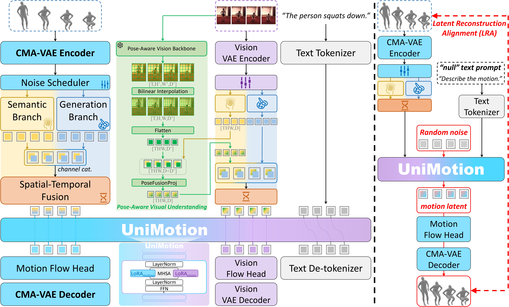
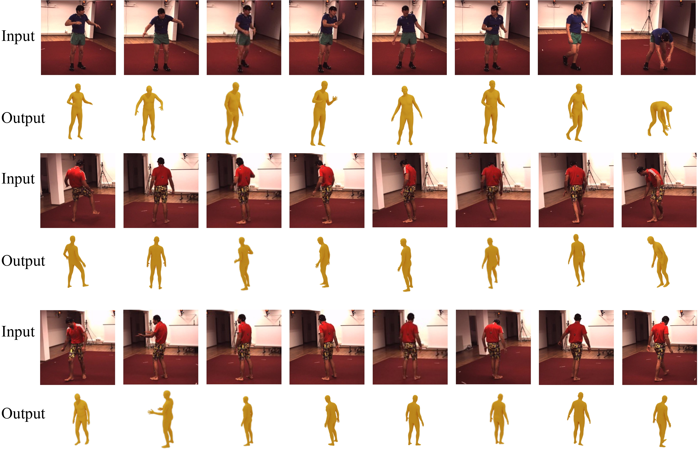
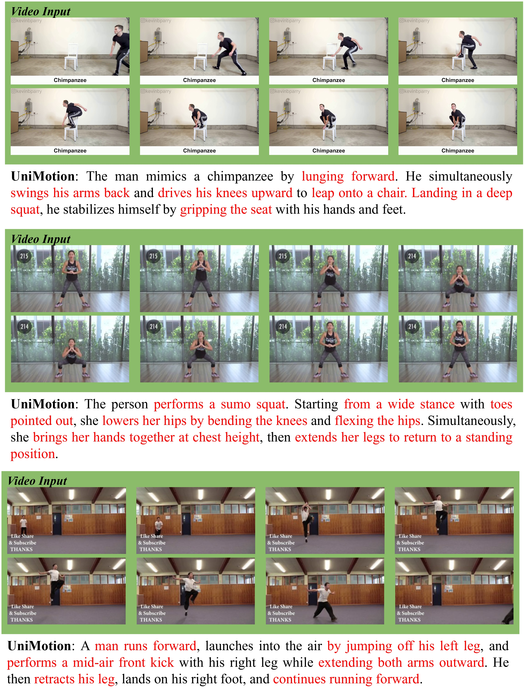
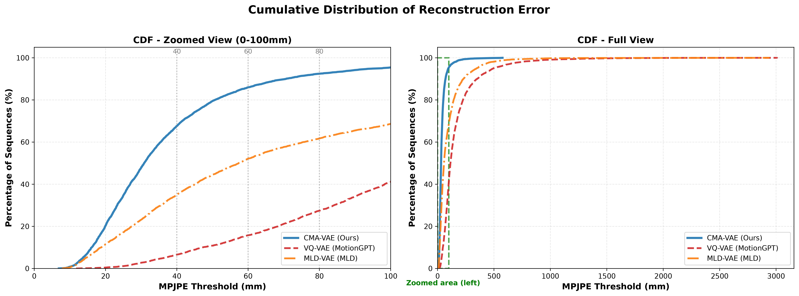
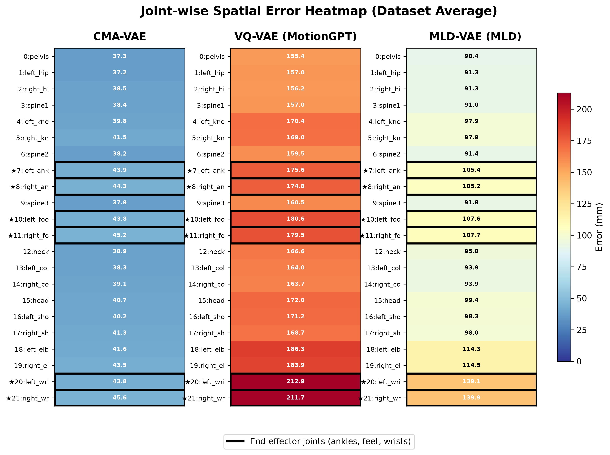

UniMotion, a unified framework for any-to-any Motion, Text, and Vision understanding, generation, and editing. UniMotion is the first model to support all seven tri-modal tasks and achieves consistent superiority over existing methods.

UniMotion integrates motion, text, and RGB into a unified framework via symmetric continuous pathways and a shared backbone for understanding and synthesis, utilizing a self-supervised Latent Reconstruction Alignment (LRA) strategy to pre-calibrate motion representations before downstream tri-modal learning.


We present UniMotion, to our knowledge the first unified framework for simultaneous understanding and generation of human motion, natural language, and RGB images within a single architecture. Existing unified models handle only restricted modality subsets (e.g., Motion-Text or static Pose-Image) and predominantly rely on discrete tokenization, which introduces quantization errors and disrupts temporal continuity. UniMotion overcomes both limitations through a core principle: treating motion as a first-class continuous modality on equal footing with RGB. A novel Cross-Modal Aligned Motion VAE (CMA-VAE) and symmetric dual-path embedders construct parallel continuous pathways for Motion and RGB within a shared LLM backbone. To inject visual-semantic priors into motion representations without requiring images at inference, we propose Dual-Posterior KL Alignment (DPA), which distills a vision-fused encoder's richer posterior into the motion-only encoder. To address the cold-start problem—where text supervision alone is too sparse to calibrate the newly introduced motion pathway—we further propose Latent Reconstruction Alignment (LRA), a self-supervised pre-training strategy that uses dense motion latents as unambiguous conditions to co-calibrate the embedder, backbone, and flow head, establishing a stable motion-aware foundation for all downstream tasks. UniMotion achieves state-of-the-art performance across seven tasks spanning any-to-any understanding, generation, and editing among the three modalities, with especially strong advantages on cross-modal compositional tasks.

Cumulative distribution of per-sequence reconstruction MPJPE for CMA-VAE, VQ-VAE, and MLD-VAE. Left: zoomed view (0–100 mm) with reference thresholds at 40, 60, and 80 mm. Right: full-range view (0–3000 mm), where the green dashed box indicates the region enlarged in the left panel. CMA-VAE's CDF is uniformly left-shifted, indicating lower reconstruction error across the entire test set. VQ-VAE exhibits a long heavy tail (>2000 mm), reflecting catastrophic quantization failures on a subset of sequences.

Joint-wise spatial error heatmap (dataset average, mm). Each column shows one model, and rows correspond to the 22 HumanML3D joints, with the numerical error annotated in each cell. Color encodes error magnitude (blue = low, red = high), and end-effector joints are highlighted with black borders. CMA-VAE maintains uniformly low error across all joints, while VQ-VAE and MLD-VAE exhibit disproportionately elevated end-effector errors.